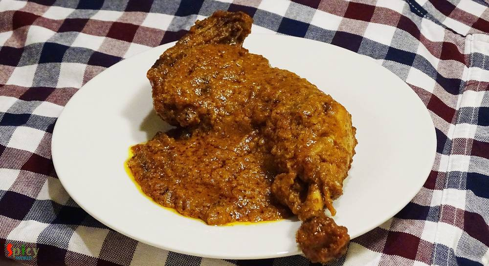
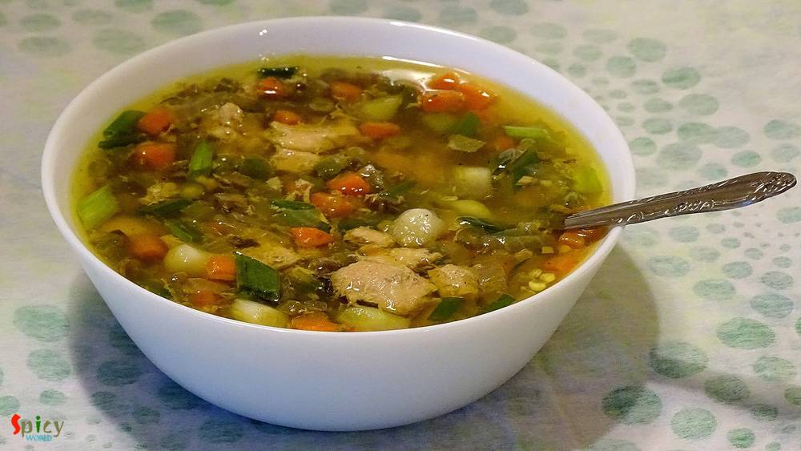
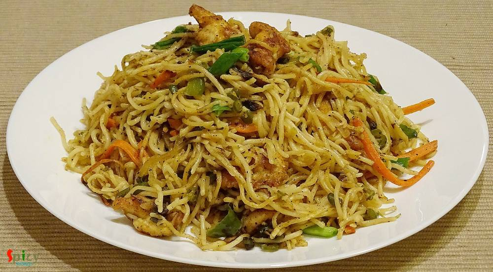

Simple and Easy Recipes

Nonveg Recipe
Nov 21, 2015
When an inch of oil or ghee floats upon gravy, yes its 'mughlai nawabi dish'. 'Nawab' means king. This category of curries have nice colored, rich, thick, creamy gravy. 'Chicken Korma' is my favourite one. You can easily eat this curry once in a month along with 'biriyani', 'pulaao', 'butter naan' or 'rumali roti'. Do not put this kind of food in your regular diet because you have to make or eat k ...


Nonveg Recipe
Nov 20, 2015
You know winter is coming and all you need is a bowl of warm soup. You can put many vegetables and protiens in it. Soup is very healthy meal for kids. It is also very helpful for sick people. Specially in winter, you can get many varieties of vegetables from grocery store. Then why not make some soup? This one is a very simple and easy recipe. I mentioned 'desi' style because i used some whole spi ...

Nonveg Recipe
Nov 19, 2015
When I was in college, I loved to do some cooking with my mom. 'Dhaniya Chicken' was one of my teenage speciality dish. Dhaniya / dhonepata means coriander leaves. I only prefer to use garlic and don't like to use whole spices for this dish. According to me, the strong aroma of whole spices dominate the flavour of fresh coriander leaves. After a long time, last night I made 'dhonepata chicken' alo ...

Nonveg Recipe
Nov 18, 2015
It is almost impossible to find them who doesn't love chinese food, specially 'hakka noodles'. I think, this is the most frequently ordered dish in any indo-chinese restaurant. I, personally don't like any side dish with hakka noodles because this chinese dish has its own magic. I made this noodles in dinner and the taste turned out exceptionally good, the flavour was same like restaurants. Try th ...
")
Veg Recipe
Nov 17, 2015
Bengali without posto(poppy seed)? - impossible. Bengali without aloo(potato)? - no way. I specially can't live without these two. 'Aloo posto' or 'aloo fulkopi posto' is my favourite weekday's lunch with steamed rice and hot daal. My hubby is very fond of 'fulkopi' (cauliflower), that's why I added this in the gravy. But if you don't like you can totally skip this part. The most simple and easy r ...
")
Veg Recipe
Nov 15, 2015
'Khatta' means tangy/sour and 'baingan' means eggplant/begun. Most probably this dish is from Kashmiri cuisin. I do not have much knowledge about this cuisin but I can assure you that you will never forget this eggplant recipe. Last wednesday we both wanted to eat veg in dinner and I had an eggplant(begun) in my fridge. So, I googled for some spicy veg recipes made with eggplant, and my eyes got s ...
")
Nonveg Recipe
Nov 13, 2015
I always try new recipes on chicken because it is my family's favourite. Last Friday 'he' wanted to eat any dry preparation at dinner and told me 1 and half hour ago from dinner time. As I had not much time in hand, so, I thought how about marinate everything with chicken pieces and cook it. It took very less time and the taste turned out phenomenal. Believe me the end result was beyond my imagina ...

Veg Recipe
Nov 11, 2015
This is a no onion and no garlic recipe. Usually in many 'puja's we make this kind of dishes. 'Potato curry' goes very well with 'luchi', 'paratha', 'kochuri' etc. But last tuesday I tried a new combo with 'bhatura'. Magically we both loved and enjoyed it very much. I learned this potato curry from my mom. She also follow the same recipe for 'niramish aloo dom' and it tastes always good. Try this ...
")
Nonveg Recipe
Nov 9, 2015
This lentil soup is one of the traditional food in Bengal. Last weekend I had two fish heads in my fridge. I am personally not too much fond of plain fish head curry. So, I made this dish and it came out really perfect like 'biyebari'. In most of the bengali wedding this dish is must for lunch and everybody loves it. I ate the home made version of this daal twice from my mom. Those times I really ...
")
Veg Recipe
Nov 8, 2015
'Chola-Bhatura' is a very popular combo in India and also in many other countries. The origin of this dish is from Punjab. But you can get this combo as street food in Delhi and many other parts of India. I ate and learnt homemade 'chola-bhatura' from my friend Monica, when I lived in New Jersy. Her 'bhatura's always came out very flakey and puffed up. There is nothing but 'super tasty' I can say ...